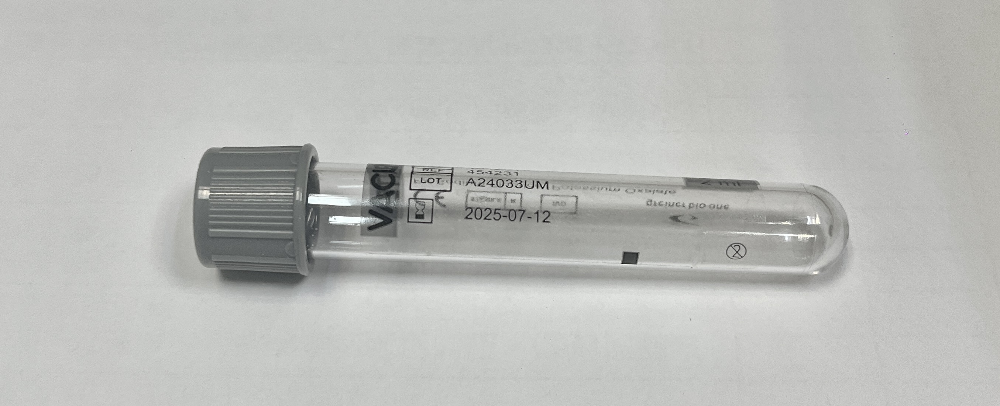

| 張眼反應 (E) | 語言反應 (V) | 動作反應 (M) | |||
|---|---|---|---|---|---|
| 自發性張眼 |
|
有條理的對話 |
|
能遵從命令動作 |
|
| 聲音刺激而張眼 |
|
混淆的對話 |
|
能有效移處疼痛刺激點 |
|
| 對疼痛刺激反應 |
|
不適當之單字 |
|
無法有效移處疼痛刺激，收縮反應 |
|
| 無反應 |
|
無意義的呻吟 |
|
異常屈曲 |
|
| 眼睛腫脹無法睜開 |
|
無反應 |
|
異常伸張 |
|
|
氣管插管(E) 氣管切開(T) |
|
失語症 |
|
無反應 |
|
| 測量方法 | 操作步驟 | 注意事項 |
|---|---|---|
| 直接視診 Direct Visual Inspection |
|
|
| 瞳孔尺測量 Pupil Gauge Measurement |
|
|
| 測試類型 | 操作方法 | 正常反應 |
|---|---|---|
| 直接光反應 Direct Light Reflex |
|
|
| 間接光反應 Consensual Light Reflex |
|
|
| 瞳孔評估常見縮寫 (Common Abbreviations) | |
|---|---|
| PERRLA | Pupils Equal, Round, Reactive to Light and Accommodation 瞳孔大小相等、圓形、對光反射正常且具調節能力 |
| PEARL | Pupils Equal And Reactive to Light 瞳孔大小相等且對光反射正常 |
| B (Brisk) | 活潑的對光反射 |
| S (Sluggish) | 遲緩的對光反射 |
| F (Fixed) | 固定的瞳孔 (無對光反射) |
| 分數 Grade |
定義 Definition |
說明 Description |
|---|---|---|
| 5 | 正常肌力 | 能對抗檢查者的阻力做完整範圍的運動 |
| 4 | 中度肌力 | 能對抗部分阻力做完整範圍的運動 |
| 3 | 輕度肌力 | 能對抗地心引力做完整範圍的運動，但無法對抗阻力 |
| 2 | 微弱肌力 | 能在排除重力影響的情況下做完整範圍的運動 |
| 1 | 痕跡肌力 | 可見或觸及肌肉收縮，但無法產生運動 |
| 0 | 完全癱瘓 | 完全無肌肉收縮 |
| 肢體 Limb |
右側 Right |
左側 Left |
|---|---|---|
| 上肢近端 Proximal Upper Limb |
||
| 上肢遠端 Distal Upper Limb |
||
| 下肢近端 Proximal Lower Limb |
||
| 下肢遠端 Distal Lower Limb |
| 縮寫 Abbreviation |
英文全名 Full Term |
中文意義 Chinese Meaning |
|---|---|---|
| bid | bis in die | 一天兩次 |
| tid | ter in die | 一天三次 |
| qid | quater in die | 一天四次 |
| qd | quaque die | 每天一次 |
| qod | quaque altera die | 每隔一天 |
| ac | ante cibum | 飯前 |
| pc | post cibum | 飯後 |
| hs | hora somni | 睡前 |
| q4h | quaque 4 hora | 每4小時 |
| q6h | quaque 6 hora | 每6小時 |
| prn | pro re nata | 需要時使用 |
| stat | statim | 立即 |
| PO | per os | 口服 |
| IV | intravenous | 靜脈注射 |
| IM | intramuscular | 肌肉注射 |
| SC/SQ | subcutaneous | 皮下注射 |
| OU | oculus uterque | 雙眼 |
| OS | oculus sinister | 左眼 |
| OD | oculus dexter | 右眼 |
| NPO | nil per os | 禁食 |
| c | cum | 伴隨 |
| s | sine | 不伴隨 |
| a.c. | ante cibum | 餐前 |
| p.c. | post cibum | 餐後 |
| 採血順序 | 種類 | 頭蓋顏色 | 添加劑成分 | 檢驗項目 |
|---|---|---|---|---|
| 1. | 血液培養：厭氧 | 厭氧 | 培養厭氧菌 使用蝴蝶針與IC時：先嗜氧再厭氧 |
|
| 血液培養：嗜氧 | 嗜氧 | 培養嗜氧菌 | ||
| 2. | 凝血功能 | 淺藍色 | 1. PT/APTT 2. D-dimer/Fibrinogen 重要：請將血加到黑色箭頭處，不可多也不可少 |
|
| 紅血球沉降速率 ESR |
黑色 | ESR 要抽到兩條白線中間 |
||
| 3. | 生化血清 | 紅色 | 生化、血清 | |
| 血清/血庫 | 黃色 | Clot activator and gel | ||
| 微量元素 | 深藍色紅標 | Silicone Coated | 血中Zn, Cd, Hg, As, Pb | |
| 4. | 生化血漿&特殊 | 綠色 | 急生化 Ammonia, |
|
| 5. | 血液學及血庫 | 紫色 | 1. 血液學 2. CBC |
|
| 微量元素 | 深藍色紫標 | K₂EDTA | ||
| 分生(血漿) | 白色 | K₂EDTA and gel | ||
| 6. | 血糖 | 灰色 |  | 生化、血糖 Lactate需冰浴送檢 |
| 尺寸 Gauge |
顏色代碼 | 常見用途 |
|---|---|---|
| 14G | 橙色 | 大量輸液、輸血、創傷急救 |
| 16G | 灰色 | 快速輸液、手術、重症治療 |
| 18G | 綠色 | 一般輸液、輸血、採血 |
| 20G | 粉紅色 | 一般輸液、日常用途 |
| 22G | 藍色 | 老年人、兒童、細小血管 |
| 24G | 黃色 | 兒童、新生兒、脆弱血管 |
| 26G | 紫色 | 新生兒、早產兒、極細小血管 |
| 項目 | 正常範圍 | 備註 |
|---|---|---|
| 成人生命徵象 Adult Vital Signs | ||
| 心率 | 60-100 次/分鐘 | 運動員可能低於60 有其他證據指出有95%的心率在50-95 次/分鐘之間 |
| 呼吸速率 | 10-20 次/分鐘 | 需判斷呼吸型態 有文獻指出呼吸速率為16-25 次/分 呼吸過緩<8-12次/分 呼吸過速>20次/分 |
| 血壓 |
收縮壓：90-120 mmHg 舒張壓：60-80 mmHg |
正常: <120/80 mmHg 高血壓: 大於130 or 80 mmHg |
| 體溫 |
耳溫: 35.9-37.6°C 口腔: 36.4-37.6°C 腋下: 35.2-36.9°C 肛門: 37.0-38.1°C |
發燒溫度: 耳溫37.5°C, 肛溫37.8°C 參考基本護理學課本，課本發燒定義為38°C 請根據實際狀況判斷 |
| 血氧飽和度 (SpO₂) |
95-100% |
低氧: <94% 嚴重低氧: <90% |
| 血糖值 | ||
| 空腹血糖 |
70-99 mg/dL (3.9-5.5 mmol/L) |
非糖尿病患者: 正常: <100 mg/dL (5.6 mmol/L) 糖尿病前期: 100-125 mg/dL (5.6-6.9 mmol/L) 糖尿病: ≥126 mg/dL (7.0 mmol/L) 糖尿病患者目標: 空腹及餐前: 80-130 mg/dL (4.4-7.2 mmol/L) 餐後兩小時: <180 mg/dL (10.0 mmol/L) |
| 餐前血糖 |
70-130 mg/dL (3.9-7.2 mmol/L) |
|
| 餐後兩小時血糖 |
<140 mg/dL (<7.8 mmol/L) |
|
| 糖化血色素 |
正常: <5.7% 糖尿病前期: 5.7-6.4% 糖尿病: ≥6.5% |
|
| 分級 | 定義 | 臨床表現 |
|---|---|---|
| 第一級 | 完整皮膚有非可壓白性紅斑 |
|
| 第二級 | 部分皮膚缺損 |
|
| 第三級 | 全層皮膚缺損 |
|
| 第四級 | 全層組織缺損 |
|
| 無法分級 | 深度不明的全層組織缺損 |
|
| 深層組織損傷 | 深層組織壓力損傷 |
|
| 評估項目 | 1分 | 2分 | 3分 | 4分 |
|---|---|---|---|---|
| 感覺知覺 | 完全喪失 | 高度受限 | 輕度受限 | 無受損 |
| 潮濕 | 持續潮濕 | 經常潮濕 | 偶爾潮濕 | 很少潮濕 |
| 活動 | 臥床 | 只能坐 | 偶爾走動 | 經常走動 |
| 活動能力 | 完全不能動 | 極度受限 | 輕度受限 | 無受限 |
| 營養 | 非常差 | 可能不足 | 足夠 | 優良 |
| 摩擦和剪力 | 有問題 | 潛在問題 | 無明顯問題 | - |
| 總分 | 風險程度 | 建議干預措施 |
|---|---|---|
| ≤ 9 | 極高風險 | 需要全面的預防措施、頻繁重新定位、特殊支持表面 |
| 10-12 | 高風險 | 需要頻繁重新定位、壓力重新分配表面、營養評估 |
| 13-14 | 中等風險 | 定期重新定位、壓力重新分配表面、保持皮膚清潔和乾燥 |
| 15-18 | 輕度風險 | 標準預防措施、定期皮膚評估、鼓勵活動 |
| 19-23 | 無風險 | 標準護理、保持良好的皮膚衛生 |
計算方法：六個評估項目的總分（最低6分，最高23分）
注意：對於某些特殊人群可能需要調整風險閾值：
- 老年人可能在15-18分時仍有中等風險
- 重症患者可能在19分以下均有風險
- 黑色或深色皮膚患者的評估可能需要特別注意，因為早期壓傷跡象可能難以識別
| 體位 | 易受壓部位 |
|---|---|
| 仰臥位 | 枕骨、肩胛骨、肘部、薦骨、足跟 |
| 側臥位 | 耳朵、肩部、肋骨、髖骨、膝內外側、踝部 |
| 俯臥位 | 前額、顴骨、耳朵、前胸、髂前上棘、膝蓋、腳趾 |
| 坐姿 | 薦骨、坐骨、脊椎突起、肩胛骨、後腦、小腿後側 |
| 分級 | 定義 | 臨床表現 |
|---|---|---|
| 1+ | 輕微水腫 |
|
| 2+ | 中度水腫 |
|
| 3+ | 嚴重水腫 |
|
| 4+ | 極重度水腫 |
|
| 評估項目 | 正常表現 | 異常表現 |
|---|---|---|
| Pain 疼痛 |
|
|
| Pallor 蒼白 |
|
|
| Pulse 脈搏 |
|
|
| Paresthesia 感覺異常 |
|
|
| Paralysis 癱瘓 |
|
|
| Poikilothermia 溫度異常 |
|
|